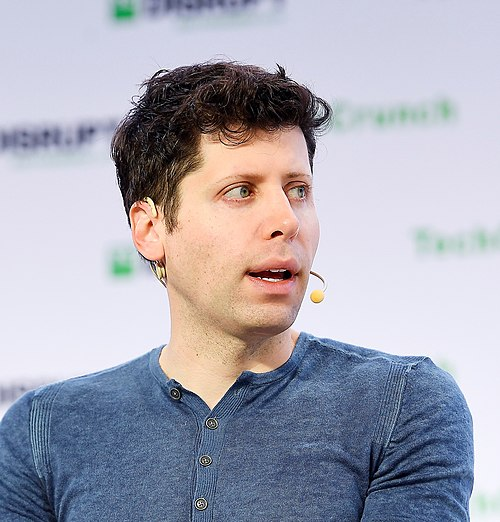
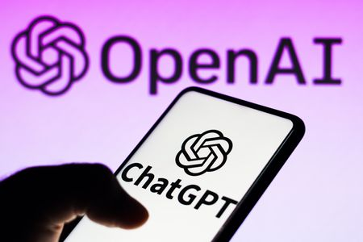

Samuel Harris Altman (Chicago, Illinois; 22 de abril de 1985), conocido como Sam Altman, es un empresario, inversionista, programador y bloguero estadounidense. Es director ejecutivo de OpenAI y expresidente de Y Combinator, y se le considera una de las figuras principales en el desarrollo de la inteligencia artificial. Su patrimonio neto actual es de 2100 millones de dólares, de acuerdo con Forbes.

OpenAI es una empresa de investigación, que se inicia como una ONG, cuyo objetivo es promover la inteligencia artificial de una manera que probablemente beneficie a la humanidad en su conjunto, en lugar de causar daño. La organización fue financiada inicialmente por Altman, Brockman, Elon Musk, Jessica Livingston, Peter Thiel, Amazon Web Services, Infosys y YC Research. Algunos de sus proyectos más destacados son ChatGPT, un chatbot que puede ver, oír y hablar; DALL-E, un modelo de IA generativa que puede crear imágenes a partir de descripciones de texto; y GPT-4.5, su modelo de lenguaje más grande y capaz. OpenAI también ofrece una plataforma de API que permite a los usuarios acceder y construir sus propios modelos de IA personalizados.